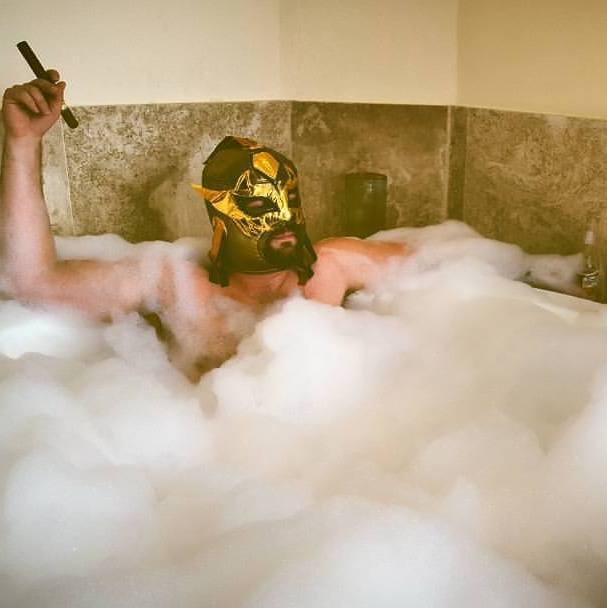

About Me
From Memphis, TN, my roots are in the Delta. With a history so rich in music, it's no wonder I ended up learning the drums at an early age. I played in groups touring the country most of my teenage and early adult life before pursuing many other interests. While I still produce music and play on recording sessions, I have dabbled in woodworking and production design in the tv/film industry and have most recently turned my professional focus to software and web development.
I am co-founder of a music software and hardware start-up here in Nashville that is focusing on the development and launch of a product called SynthTable. Essentially, the software turns any digital turntable into a synthesizer and any respective DJ into a musician.